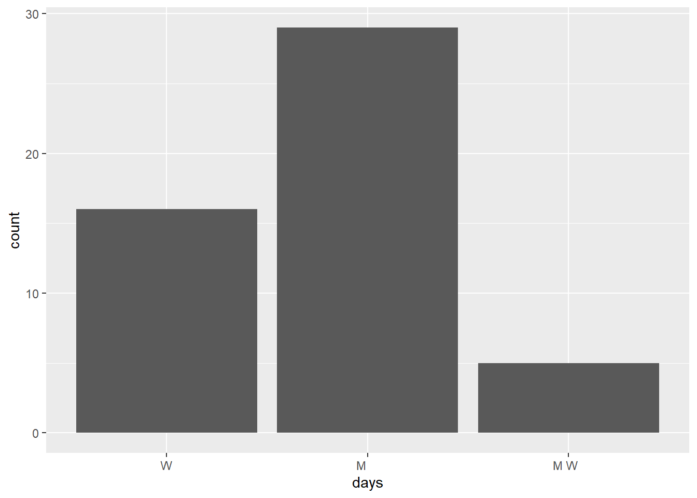

sem area enroll instructor
1 SP2023 History 30 - people Ernesto Capello
2 FA2023 Math 20 - people Lori Ziegelmeier
3 SP2024 Anthro 25 - people Arjun Guneratne
# Define a new variable "num" that adds up the number of characters in the area labelclasses |>mutate(num =str_length(area))
sem area enroll instructor num
1 SP2023 History 30 - people Ernesto Capello 7
2 FA2023 Math 20 - people Lori Ziegelmeier 4
3 SP2024 Anthro 25 - people Arjun Guneratne 6
# Change the areas to "history", "math", "anthro" instead of "History", "Math", "Anthro"classes |>mutate(area =str_to_lower(area))
sem area enroll instructor
1 SP2023 history 30 - people Ernesto Capello
2 FA2023 math 20 - people Lori Ziegelmeier
3 SP2024 anthro 25 - people Arjun Guneratne
# Create a variable that id's which courses were taught in springclasses |>mutate(spring =str_detect(sem, "2023"))
sem area enroll instructor spring
1 SP2023 History 30 - people Ernesto Capello TRUE
2 FA2023 Math 20 - people Lori Ziegelmeier TRUE
3 SP2024 Anthro 25 - people Arjun Guneratne FALSE
# Change the semester labels to "fall2023", "spring2024", "spring2023"classes |>mutate(sem =str_replace(sem, "FA", "fall"),sem =str_replace(sem, "SP", "spring"))
sem area enroll instructor
1 spring2023 History 30 - people Ernesto Capello
2 fall2023 Math 20 - people Lori Ziegelmeier
3 spring2024 Anthro 25 - people Arjun Guneratne
# In the enroll variable, change all e's to 3's (just because?)classes |>mutate(enroll =str_replace_all(enroll, "3", "e"))
sem area enroll instructor
1 SP2023 History e0 - people Ernesto Capello
2 FA2023 Math 20 - people Lori Ziegelmeier
3 SP2024 Anthro 25 - people Arjun Guneratne
# Use sem to create 2 new variables, one with only the semester (SP/FA) and 1 with the year
Example 2
# say we only want spring courses# How can we do this after mutating?classes |>mutate(spring =str_detect(sem, "SP")) |>filter(spring =="TRUE")
sem area enroll instructor spring
1 SP2023 History 30 - people Ernesto Capello TRUE
2 SP2024 Anthro 25 - people Arjun Guneratne TRUE
# We don't have to mutate first!classes |>filter(str_detect(sem, "SP"))
sem area enroll instructor
1 SP2023 History 30 - people Ernesto Capello
2 SP2024 Anthro 25 - people Arjun Guneratne
# Yet another wayclasses |>filter(!str_detect(sem, "FA"))
sem area enroll instructor
1 SP2023 History 30 - people Ernesto Capello
2 SP2024 Anthro 25 - people Arjun Guneratne
Example 3
Suppose we wanted to get separate columns for the first and last names of each course instructor in classes. Try doing this using str_sub(). But don’t try too long! Explain what trouble you ran into.
the instructors names don’t have any characters in common…so we couldn’t easily seperate them by first and last name.
Example 4
# use seperateclasses |>separate(instructor, c("first", "last"), sep =" ")
sem area enroll first last
1 SP2023 History 30 - people Ernesto Capello
2 FA2023 Math 20 - people Lori Ziegelmeier
3 SP2024 Anthro 25 - people Arjun Guneratne
# Sometimes the function can "intuit" how we want to separate the variableclasses |>separate(instructor, c("first", "last"))
sem area enroll first last
1 SP2023 History 30 - people Ernesto Capello
2 FA2023 Math 20 - people Lori Ziegelmeier
3 SP2024 Anthro 25 - people Arjun Guneratne
# a. Separate enroll into 2 separate columns: students and people.classes |>separate(enroll, c("students", "people"), sep ="-")
sem area students people instructor
1 SP2023 History 30 people Ernesto Capello
2 FA2023 Math 20 people Lori Ziegelmeier
3 SP2024 Anthro 25 people Arjun Guneratne
We separated sem into semester and year above using str_sub(). Why would this be hard using separate()?
this would be hard because there’s no character seperating the semester and year components of sem
# Optional: When we want to split a column into 2+ new columns (or do other types of string processing), but there’s no consistent pattern by which to do this, we can use regular expressions # (?<=[SP|FA]): any character *before* the split point is a "SP" or "FA"# (?=2): the first character *after* the split point is a 2classes |>separate(sem, c("semester", "year"),"(?<=[SP|FA])(?=2)")
semester year area enroll instructor
1 SP 2023 History 30 - people Ernesto Capello
2 FA 2023 Math 20 - people Lori Ziegelmeier
3 SP 2024 Anthro 25 - people Arjun Guneratne
# More general:# (?<=[a-zA-Z]): any character *before* the split point is a lower or upper case letter# (?=[0-9]): the first character *after* the split point is numberclasses |>separate(sem, c("semester", "year"),"(?<=[A-Z])(?=[0-9])")
semester year area enroll instructor
1 SP 2023 History 30 - people Ernesto Capello
2 FA 2023 Math 20 - people Lori Ziegelmeier
3 SP 2024 Anthro 25 - people Arjun Guneratne
Exercises
Exercise 1
courses <-read.csv("https://mac-stat.github.io/data/registrar.csv")# Check it outhead(courses)
number crn name days
1 AMST 112-01 10318 Introduction to African American Literature M W F
2 AMST 194-01 10073 Introduction to Asian American Studies M W F
3 AMST 194-F1 10072 What’s After White Empire - And Is It Already Here? T R
4 AMST 203-01 10646 Politics and Inequality: The American Welfare State M W F
5 AMST 205-01 10842 Trans Theories and Politics T R
6 AMST 209-01 10474 Civil Rights in the United States W
time room instructor avail_max
1 9:40 - 10:40 am MAIN 009 Daylanne English 3 / 20
2 1:10 - 2:10 pm MUSIC 219 Jake Nagasawa -4 / 16
3 3:00 - 4:30 pm HUM 214 Karin Aguilar-San Juan 0 / 14
4 9:40 - 10:40 am CARN 305 Lesley Lavery 3 / 25
5 3:00 - 4:30 pm MAIN 009 Myrl Beam -2 / 20
6 7:00 - 10:00 pm MAIN 010 Walter Greason -1 / 15
# Construct a table that indicates the number of classes offered in each day/time slot# Print only the 6 most popular time slotscourses |>group_by(days, time) |>summarize(n =n()) |>arrange(desc(n)) |>head()
`summarise()` has grouped output by 'days'. You can override using the
`.groups` argument.
# A tibble: 6 × 3
# Groups: days [2]
days time n
<chr> <chr> <int>
1 "M W F" 10:50 - 11:50 am 76
2 " T R " 9:40 - 11:10 am 71
3 "M W F" 9:40 - 10:40 am 68
4 "M W F" 1:10 - 2:10 pm 66
5 " T R " 3:00 - 4:30 pm 62
6 " T R " 1:20 - 2:50 pm 59
dept number section crn name
1 AMST 112 01 10318 Introduction to African American Literature
2 AMST 194 01 10073 Introduction to Asian American Studies
3 AMST 194 F1 10072 What’s After White Empire - And Is It Already Here?
4 AMST 203 01 10646 Politics and Inequality: The American Welfare State
5 AMST 205 01 10842 Trans Theories and Politics
6 AMST 209 01 10474 Civil Rights in the United States
days time room instructor avail max enroll
1 M W F 9:40 - 10:40 am MAIN 009 Daylanne English 3 20 17
2 M W F 1:10 - 2:10 pm MUSIC 219 Jake Nagasawa -4 16 20
3 T R 3:00 - 4:30 pm HUM 214 Karin Aguilar-San Juan 0 14 14
4 M W F 9:40 - 10:40 am CARN 305 Lesley Lavery 3 25 22
5 T R 3:00 - 4:30 pm MAIN 009 Myrl Beam -2 20 22
6 W 7:00 - 10:00 pm MAIN 010 Walter Greason -1 15 16
Exercise 3
# Identify the 6 departments that offered the most sectionscourses_clean |>group_by(dept) |>summarize(n =n()) |>arrange(desc(n))
# Identify the 6 departments with the longest average course titlescourses_clean |>mutate(length =str_length(name)) |>group_by(dept) |>summarize(average_title =mean(length)) |>arrange(desc(average_title)) |>head(6)
# part a# courses taught by Alicia Johnsoncourses_clean |>filter(instructor =="Alicia Johnson")
dept number section crn name days time
1 STAT 253 01 10806 Statistical Machine Learning T R 9:40 - 11:10 am
2 STAT 253 02 10807 Statistical Machine Learning T R 1:20 - 2:50 pm
3 STAT 253 03 10808 Statistical Machine Learning T R 3:00 - 4:30 pm
room instructor avail max enroll
1 THEATR 206 Alicia Johnson -3 20 23
2 THEATR 206 Alicia Johnson -3 20 23
3 THEATR 206 Alicia Johnson 2 20 18
# part b# create a new dataset with only STAT sectionsstat <- courses_clean |>filter(dept =="STAT") |>mutate(name =str_replace(name, "Introduction to", ""),name =str_replace_all(name, "Statistical", "Stat")) |>separate(time, c("start_time", "end_time"), sep =" - ") |>select("number", "name", "start_time", "enroll")head(stat)
number name start_time enroll
1 112 Data Science 3:00 27
2 112 Data Science 9:40 21
3 112 Data Science 1:20 25
4 125 Epidemiology 12:00 26
5 155 Stat Modeling 1:10 32
6 155 Stat Modeling 9:40 24
# explore enrollments by department# which department has the highest average course number?enrollments |>mutate(number =as.numeric(number)) |>group_by(dept) |>summarize(average_number =round(mean(number))) |>arrange(desc(average_number)) |>mutate(dept =fct_reorder(dept, average_number)) |>ggplot(aes(x = dept, y= average_number))+geom_col()+labs(title ="What is the average course number per department?")
Exercise 7
# filter out cross-listed coursesenrollments |>filter(dept %in%c("STAT", "COMP"), number ==112, section =="01")
dept number section crn name days time
1 COMP 112 01 10248 Introduction to Data Science T R 3:00 - 4:30 pm
2 STAT 112 01 10249 Introduction to Data Science T R 3:00 - 4:30 pm
room instructor avail max enroll
1 OLRI 254 Brianna Heggeseth 1 28 27
2 OLRI 254 Brianna Heggeseth 1 28 27
enrollments_2 <- enrollments |>distinct(days, time, instructor, .keep_all =TRUE)# NOTE: By default this keeps the first department alphabetically# That's fine because we won't use this to analyze department enrollments!enrollments_2 |>filter(instructor =="Brianna Heggeseth", name =="Introduction to Data Science")
dept number section crn name days time
1 COMP 112 01 10248 Introduction to Data Science T R 3:00 - 4:30 pm
room instructor avail max enroll
1 OLRI 254 Brianna Heggeseth 1 28 27
# which instructor has the most students?enrollments_2 |>group_by(instructor, dept) |>mutate(section =as.numeric(section)) |>summarize(n_students =sum(enroll),n_courses =n(),class_avg =mean(enroll)) |>mutate(n_courses =as.factor(n_courses)) |>mutate(n_courses =fct_relevel(n_courses, c("1","2","3"))) |>ggplot(aes(x=n_courses, y= class_avg))+geom_boxplot()+stat_summary(aes(label =round(after_stat(y), 1)),geom ="text", fun = \(y) { o <-boxplot.stats(y)$out; if(length(o) ==0) NAelse o },hjust =-1 )
Warning: There were 39 warnings in `mutate()`.
The first warning was:
ℹ In argument: `section = as.numeric(section)`.
ℹ In group 1: `instructor = "Abby Marsh"` and `dept = "COMP"`.
Caused by warning:
! NAs introduced by coercion
ℹ Run `dplyr::last_dplyr_warnings()` to see the 38 remaining warnings.
`summarise()` has grouped output by 'instructor'. You can override using the
`.groups` argument.
Warning: Removed 1 row containing missing values or values outside the scale range
(`geom_text()`).
Extra practice
# Make a bar plot showing the number of night courses by day of the week# Use courses_cleancourses_clean |>group_by(time, days) |>separate(time, c("start", "end"), sep ="-") |>mutate(night =str_detect(start, "7:00")) |>mutate(days =as.factor(days)) |>filter(night =="TRUE") |>ggplot(aes(x=days, fill = dept))+geom_bar(position ="stack")
Warning: Expected 2 pieces. Missing pieces filled with `NA` in 1 rows [56].

Source Code
---title: "Strings"format: html---Use this file for practice with the **Strings** in-class activity. Refer to the class website for details.## Examples {.unnumbered}### Example 1 {.unnumbered}```{r}library(tidyverse)classes <-data.frame(sem =c("SP2023", "FA2023", "SP2024"),area =c("History", "Math", "Anthro"),enroll =c("30 - people", "20 - people", "25 - people"),instructor =c("Ernesto Capello", "Lori Ziegelmeier", "Arjun Guneratne"))classes``````{r}# Define a new variable "num" that adds up the number of characters in the area labelclasses |>mutate(num =str_length(area))``````{r}# Change the areas to "history", "math", "anthro" instead of "History", "Math", "Anthro"classes |>mutate(area =str_to_lower(area))``````{r}# Create a variable that id's which courses were taught in springclasses |>mutate(spring =str_detect(sem, "2023"))``````{r}# Change the semester labels to "fall2023", "spring2024", "spring2023"classes |>mutate(sem =str_replace(sem, "FA", "fall"),sem =str_replace(sem, "SP", "spring"))``````{r}# In the enroll variable, change all e's to 3's (just because?)classes |>mutate(enroll =str_replace_all(enroll, "3", "e"))``````{r}# Use sem to create 2 new variables, one with only the semester (SP/FA) and 1 with the year```# Example 2 {.unnumbered}```{r}# say we only want spring courses# How can we do this after mutating?classes |>mutate(spring =str_detect(sem, "SP")) |>filter(spring =="TRUE")# We don't have to mutate first!classes |>filter(str_detect(sem, "SP"))# Yet another wayclasses |>filter(!str_detect(sem, "FA"))```### Example 3 {.unnumbered}Suppose we wanted to get separate columns for the first and last names of each course instructor in classes. Try doing this using str_sub(). But don’t try too long! Explain what trouble you ran into.the instructors names don't have any characters in common...so we couldn't easily seperate them by first and last name.### Example 4 {.unnumbered}```{r}# use seperateclasses |>separate(instructor, c("first", "last"), sep =" ")# Sometimes the function can "intuit" how we want to separate the variableclasses |>separate(instructor, c("first", "last"))``````{r}# a. Separate enroll into 2 separate columns: students and people.classes |>separate(enroll, c("students", "people"), sep ="-")```b. We separated sem into semester and year above using str_sub(). Why would this be hard using separate()?* this would be hard because there's no character seperating the semester and year components of sem```{r}# Optional: When we want to split a column into 2+ new columns (or do other types of string processing), but there’s no consistent pattern by which to do this, we can use regular expressions # (?<=[SP|FA]): any character *before* the split point is a "SP" or "FA"# (?=2): the first character *after* the split point is a 2classes |>separate(sem, c("semester", "year"),"(?<=[SP|FA])(?=2)")# More general:# (?<=[a-zA-Z]): any character *before* the split point is a lower or upper case letter# (?=[0-9]): the first character *after* the split point is numberclasses |>separate(sem, c("semester", "year"),"(?<=[A-Z])(?=[0-9])")```## Exercises {.unnumbered}### Exercise 1 {.unnumbered}```{r}courses <-read.csv("https://mac-stat.github.io/data/registrar.csv")# Check it outhead(courses)``````{r}# Construct a table that indicates the number of classes offered in each day/time slot# Print only the 6 most popular time slotscourses |>group_by(days, time) |>summarize(n =n()) |>arrange(desc(n)) |>head()```### Exercise 2 {.unnumbered}```{r}courses_clean <- courses |>separate(avail_max, c("avail", "max"), sep =" / ") |>mutate(max =as.numeric(max), avail =as.numeric(avail)) |>mutate(enroll = max - avail) |>separate(number, c("dept", "number"), sep =" ") |>separate(number, c("number", "section"), sep ="-")head(courses_clean)```### Exercise 3 {.unnumbered}```{r}# Identify the 6 departments that offered the most sectionscourses_clean |>group_by(dept) |>summarize(n =n()) |>arrange(desc(n))# Identify the 6 departments with the longest average course titlescourses_clean |>mutate(length =str_length(name)) |>group_by(dept) |>summarize(average_title =mean(length)) |>arrange(desc(average_title)) |>head(6)```### Exercise 4 {.unnumbered}```{r}# part a# courses taught by Alicia Johnsoncourses_clean |>filter(instructor =="Alicia Johnson")# part b# create a new dataset with only STAT sectionsstat <- courses_clean |>filter(dept =="STAT") |>mutate(name =str_replace(name, "Introduction to", ""),name =str_replace_all(name, "Statistical", "Stat")) |>separate(time, c("start_time", "end_time"), sep =" - ") |>select("number", "name", "start_time", "enroll")head(stat)```### Exercise 5 {.unnumbered}```{r}enrollments <- courses_clean |>filter(dept !="PE", dept !="INTD") |>filter(!(dept =="MUSI"&as.numeric(number) <100),!(dept =="THDA"&as.numeric(number) <100)) |>mutate(lab =str_detect(section, "L")) |>filter(lab =="FALSE") |>select(-"lab")```### Exercise 6 {.unnumbered}```{r, fig.width=18, fig.height=12}# explore enrollments by department# which department has the highest average course number?enrollments |> mutate(number = as.numeric(number)) |> group_by(dept) |> summarize(average_number = round(mean(number))) |> arrange(desc(average_number)) |> mutate(dept = fct_reorder(dept, average_number)) |> ggplot(aes(x = dept, y= average_number))+ geom_col()+ labs(title = "What is the average course number per department?")```### Exercise 7 {.unnumbered}```{r}# filter out cross-listed coursesenrollments |>filter(dept %in%c("STAT", "COMP"), number ==112, section =="01")enrollments_2 <- enrollments |>distinct(days, time, instructor, .keep_all =TRUE)# NOTE: By default this keeps the first department alphabetically# That's fine because we won't use this to analyze department enrollments!enrollments_2 |>filter(instructor =="Brianna Heggeseth", name =="Introduction to Data Science")``````{r}# which instructor has the most students?enrollments_2 |>group_by(instructor, dept) |>mutate(section =as.numeric(section)) |>summarize(n_students =sum(enroll),n_courses =n(),class_avg =mean(enroll)) |>mutate(n_courses =as.factor(n_courses)) |>mutate(n_courses =fct_relevel(n_courses, c("1","2","3"))) |>ggplot(aes(x=n_courses, y= class_avg))+geom_boxplot()+stat_summary(aes(label =round(after_stat(y), 1)),geom ="text", fun = \(y) { o <-boxplot.stats(y)$out; if(length(o) ==0) NAelse o },hjust =-1 )```### Extra practice {.unnumbered}```{r}# Make a bar plot showing the number of night courses by day of the week# Use courses_cleancourses_clean |>group_by(time, days) |>separate(time, c("start", "end"), sep ="-") |>mutate(night =str_detect(start, "7:00")) |>mutate(days =as.factor(days)) |>filter(night =="TRUE") |>ggplot(aes(x=days, fill = dept))+geom_bar(position ="stack")```